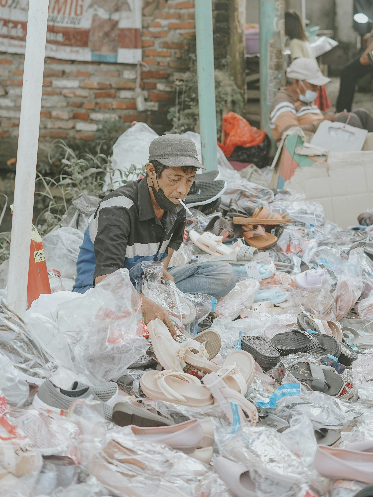

Fakta om tøjets påvirkning på miljøet
Produktionen af tøj og tekstiler af blandt de industrier i veren, som forurener mest.
Vi ved, at det kan være svært, at gennemskue hvad det betyder. Derfor kan
du her på siden læse om nogle af de vigtigeste faktaer.

Danmarks andel af de globale forbrugsudledninger fra tekstiler udgør, en samlet udledning på godt 2 mio. ton CO2e. Det er svarende til 400kg CO2e per dansker årligt. Hvor beklædning udgør den største del: Ca. 310 kg af denne udledning er fra beklædning, mens resten er øvrige boligtekstiler. I EU-landene ligger gennemsnittet på 270 kg CO2e per person per år, så danskerne er generelt meget førende i forbruget af tekstiler og udledning af CO2e Specielt tøj lavet af syntetiske fibre og materialer udleder meget Co2. Materialer som polyester, akryl, nylon, lycra og spandex. De syntetiske materialer går igennem en kemis process som kræver meget energi. Specielt tøj lavet af syntetiske fibre og materialer udleder meget Co2. Materialer som polyester, akryl, nylon, lycra og spandex. De syntetiske materialer går igennem en kemis process som kræver meget energi I 2026 blev der regnet ud, at husholdningerne havde samlet smidt 14.300 tons tekstiler ud i småt brændbart. De syntetiske materialer går igennem en kemis process som kræver meget energi Butikkerne i dag, skal hele tiden følge med trends og forbrugerens behov for at købe nyt hele tiden, så derfor har de være forårsaget til, at udkomme med ekspress kollektioner langt oftere. Dette gælder specielt fast-fashion kæder som H&M, Zara, Bershka, Pull&Bear og mange flere. De lever af at sælge billigt tøj, men i store mængder. Dette skyldes, at hyppigheden af tøjkollektioner bliver hurtigere og at forburget stiger, men også at overklasse og økonomien stiger. Dette skyldes det store vandforbrug ved plantning af bomuld til stoffet. Derefter bearbejdning og produktionen af materialet og t-shirten, her skal materialet laves, bleges, farves. dette kræver alt sammen vand og kemikaler. .Det første skridt er, at opsøge viden og blive oplyst om problemet. Her er du allerede godt på vej .Derefter skal købs og forbrug vanerne ændres. Begynd at afslå. Sige nej tak til trends og reklamer, og køb mindre. .Gentænk dit tøj, kan tøjet bruges og styles på flere måder? Kan det deles med andre eller lånes? .Reducer dit tøjforbrug, begynd at passe på dit tøj, så det holder længst muligt. Hvis du skal købe nyt, så invester i kvalitet, så det holder længst muligt. .Begynd, at genbruge. Køb i genbrug, send til genbrug, genbrug gamle ting i skabet. .Vær ikke bange for, at oplyse andre og komme med input til hvordan de kan hjælpe med at gøre en forskel. Vær med til at gøre en forskel. I EU er tøj og tekstil industrien det 4. mest miljøbelastende forbrugsområde
I gennemsnit køber hver dansker 10,9kg nyt tøj om året
1kg tekstil udleder 15kg Co2

14.300 tons tekstiler bliver smidt ud
Før udkom der op til 4 kollektioner årligt i butikkerne. Nu er det helt op til 24.

Statestikker viser, at forbruget af tøj forventes, at stige med 60% globalt inden 2030.
Én enkelt t-shirt kræver 1400 liter vand at producere.
Den bedste måde, at ændre vores tøjforbrug er ved at ændre vaner